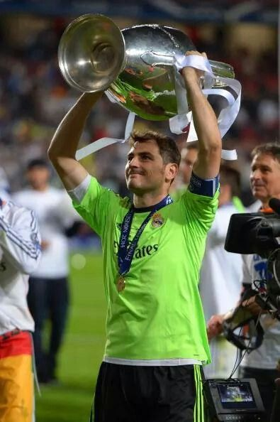
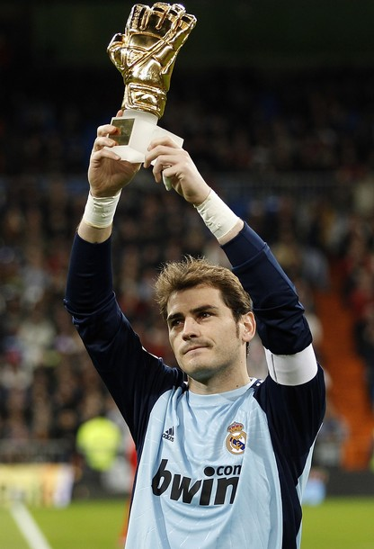
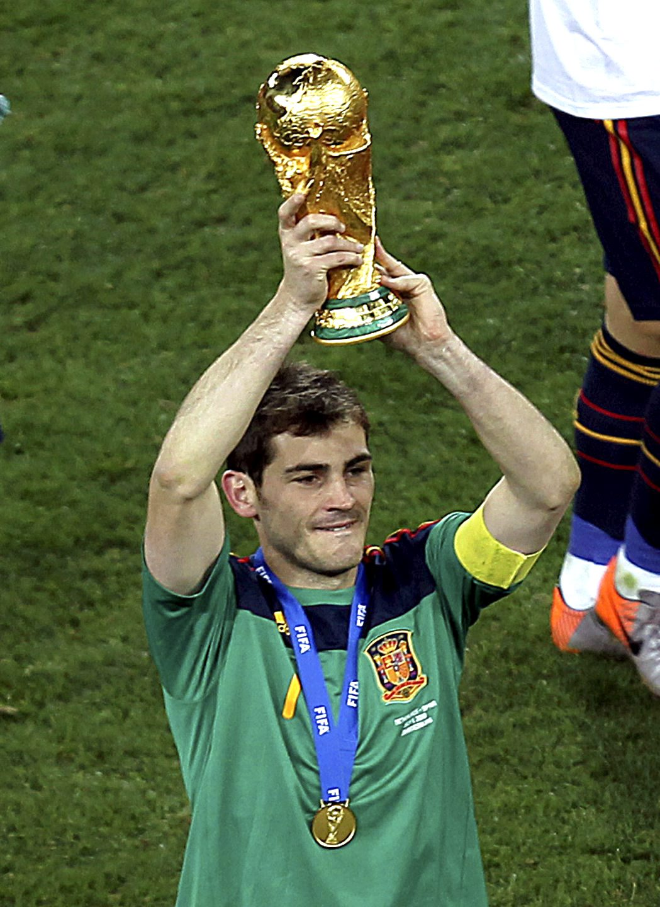

Club Awards

- Club Awards
- Real Madrid C
- División: 1998–99 (Group VII)
- Real Madrid
- La Liga: 2000–01, 2002–03, 2006–07, 2007–08, 2011–12
- Copa del Rey: 2010–11, 2013–14
- Supercopa de España: 2001, 2003, 2008, 2012
- UEFA Champions League: 1999–2000, 2001–02, 2013–14
- UEFA Super Cup: 2002, 2014
- FIFA Club World Cup: 2014
- Intercontinental Cup: 2002
- Porto
- Primeira Liga: 2017–18
- Supertaça Cândido de Oliveira: 2018
- Spain U16
- UEFA European U-16 Championship: 1997
- Spain U18
- UEFA–CAF Meridian Cup: 1999
- Spain U20
- FIFA World Youth Championship: 1999
- Spain
- FIFA World Cup: 2010
- UEFA European Championship: 2008, 2012
Individual Awards

- Individual Awards
- Bravo Award: 2000
- La Liga Breakthrough Player of the Year: 2000
- La Liga Zamora Trophy: 2007–08
- La Liga Best Goalkeeper: 2009, 2012
- La Liga Fair Play Award: 2012–13
- Primeira Liga Fair Play Award: 2017–18
- MARCA Fair Play Award – MARCA's 80th Anniversary: 2018
- Dragões de Ouro Award – Porto Athlete of the Year: 2018
- Primeira Liga Goalkeeper of the Month: October/November 2018
- Primeira Liga Best Goalkeeper: 2018–19
- Primeira Liga Team of the Year: 2018–19
- Quinas de Ouro Award – Primeira Liga Best XI: 2018–19
- Best European Goalkeeper: 2010
- IFFHS World's Best Goalkeeper: 2008, 2009, 2010, 2011, 2012
- IFFHS Best Goalkeeper of the Decade 2001–2010: 2nd
- IFFHS Best Goalkeeper of the Past 25 Years 1987–2012: 2nd
- FIFA FIFPro World XI: 2008, 2009, 2010, 2011, 2012
- FIFA World Cup Golden Glove: 2010
- FIFA World Cup Dream Team: 2010
- UEFA Euro Team of the Tournament: 2008, 2012
- UEFA Team of the Year: 2007, 2008, 2009, 2010, 2011, 2012
- ESM Team of the Year: 2008
- UEFA Ultimate Team of the Year (published 2019)
- Golden Foot: 2017
- World XI: Team of the 21st Century
- Globe Soccer Awards – Player Career Award: 2020
- 11Leyendas Jornal AS: 2021
Broken Records

- Broken Records
- Second-most appearances in the UEFA Champions League: 177 (behind Cristiano Ronaldo)
- Second-most clean sheets in the UEFA Champions League: 57 (behind Manuel Neuer)
- Third-most victories in the UEFA Champions League: 101
- Most consecutive seasons in the UEFA Champions League: 20
- First player in UEFA Champions League history to reach the knockout phase 19 times
- First goalkeeper to win 100 UEFA Champions League matches
- Youngest goalkeeper to play in a UEFA Champions League final